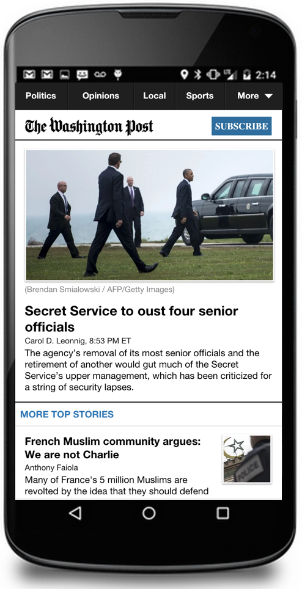
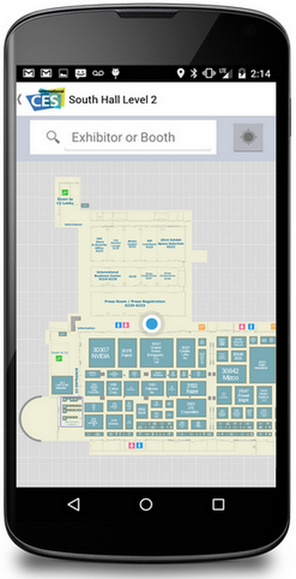
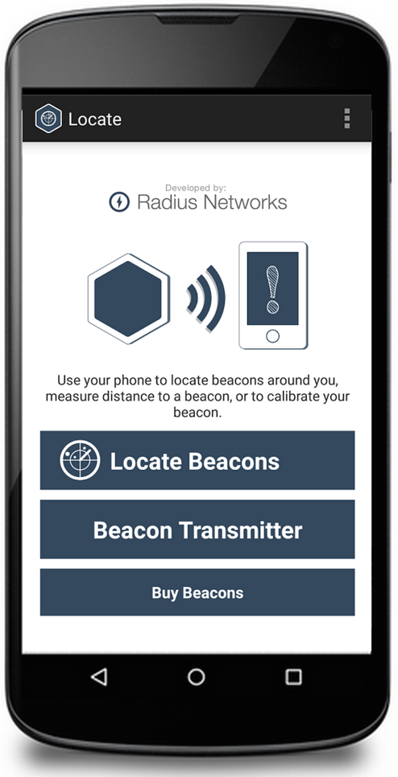
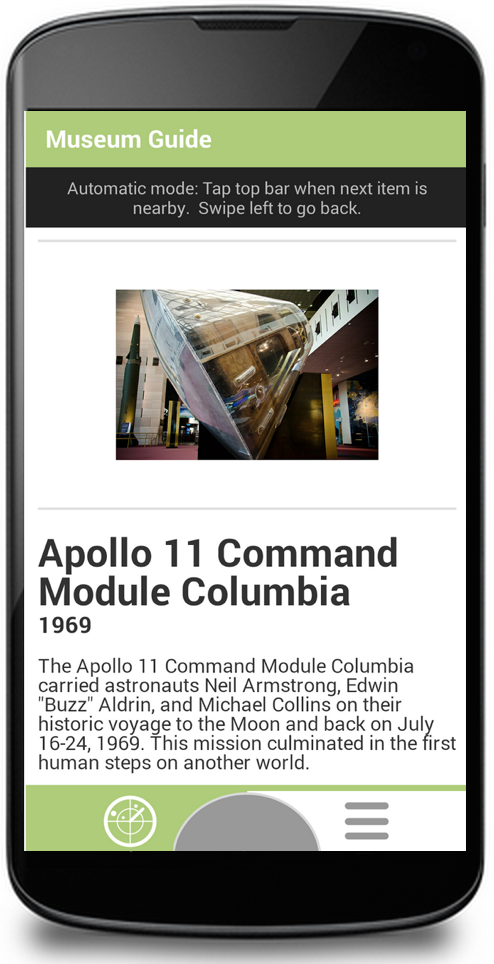
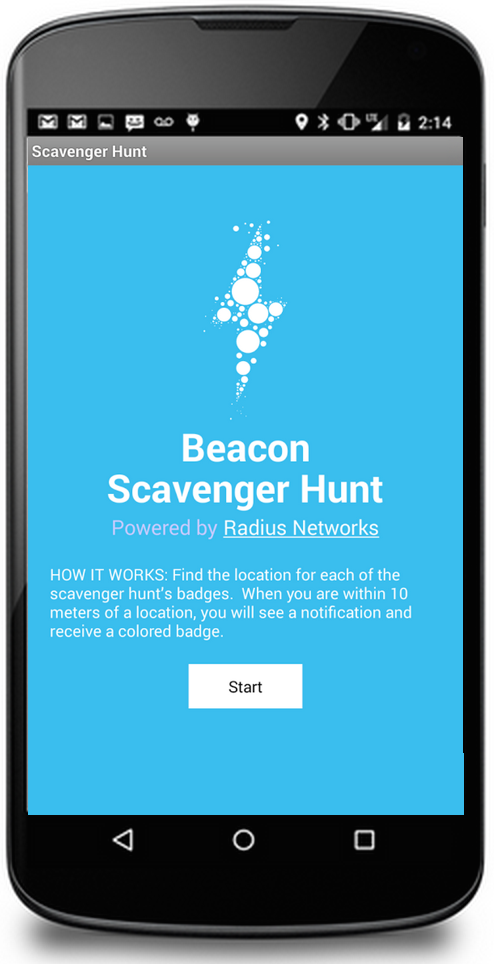
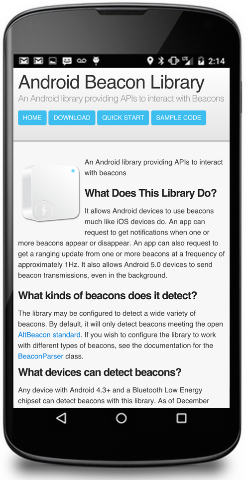

David is available for contract software development work for clients worldwide. He has a strong track record of delivering projects on time and under budget. His strong interpersonal skills allow for easy interaction with customers and end-users, and his high-energy temperament and entrepreneurial orientation allow him to independently complete projects on schedule. His mobile apps and libraries run on over 150 million mobile devices worldwide, and past works are exhibited at the Smithsonian National Air and Space Museum. References available on request.
Specialties
- iOS and Android app development
- Beacon and Bluetooth LE expertise
- HTML 5 app development
- Web service development with Ruby and Java
- Bluetooth Low Energy applications
- News and media applications
Sample Commercial Projects:
|

HTML 5 mobile web app • Offline reading w/ LocalStorage • Responsive HTML5/Javascript and jQuery frontend • Java Spring MVC backend w/ REST web services • Backend bundling and caching services for iPhone native app |

Consumer Electronics Show Mobile Maps Official indoor nav app for the Consumer Electronics Show • iOS and Android • Responsive HTML5/Javascript and jQuery config web app • Ruby on Rails 4 / Postgres backend |
|

Beacon location and transmission tool • iOS and Android |

National Air and Space Museum (Private) Demonstration museum guide app • iOS and Android |
Open Source Projects:
|

Beacon Scavenger Hunt iOS and Android |

Open Source library for bluetooth beacons |
Testimonials:
"I enthusiastically recommend David Young for development work. David is an incredibly skilled developer, adept at both frontend and backend work in addition to overall architecture. David is at his best when presented with a problem to solve. He'll suggest several technical solutions and recommend the best one for either my budget, time or desired effect. He hits all deadlines and communicates clearly around when his work will be complete and what we owe him for his labor. He’s been an excellent resource for our team."
-- Julia Beiser, Director of Mobile Projects, The Washington Post
"David is a true professional and he's a world leader (the authority!) in his area of expertise. The way he handled communication and documentation was first class. I have no hesitation when recommending him."
-- James Docherty, Co-Founder, Orchard VIE Ltd
Other Apps
Amtrak Baggage Check for iOS (private)
Washington Post News for Android
Washington Post News for iPad
Commutyble for iOS and Android
Orchard Beacon detector for Android (private)
Washington Post Election 2012 for iPad (retired)
Raadaar for iOS and Android
Locate Beacon for iOS and Android
Music + Art for iOS (not released)
HortiBeacon and ProxInfo for iOS and Android
Fi Mobile Credit Unions for iOS and Android
Consumer Electronics Show 2015/2016 Mobile Maps for iOS and Android (retired)
Other Libraries
Orchard Beacon detector Library for Android (private)
Hydr8 BottleKit Framework for iOS (private)
All My Spots Beacon Framework for iOS (private)
Iota Labs BLE Library for Android (private)
Contact: tech@davidgyoung.com